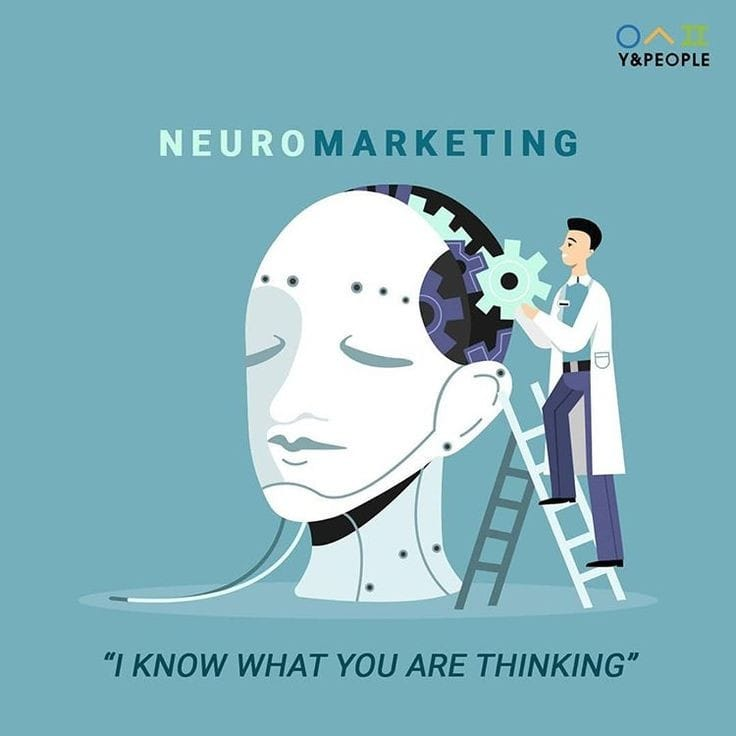

Creamos sitios web personalizados, atractivos y completamente optimizados para móviles. Desde landing pages hasta plataformas más avanzadas, nos aseguramos de que tu sitio sea una herramienta eficaz para tu negocio.
Incluye:
Te ayudamos a conectar con tu audiencia a través de estrategias de marketing digital efectivas. Diseñamos y gestionamos campañas de publicidad online, marketing de contenidos y social media.
Servicios específicos:
Aplicamos principios psicológicos para mejorar tus estrategias de venta, asegurando que tu mensaje conecte de manera más profunda con tus clientes.
Estrategias incluidas:
Te ayudamos a construir y posicionar tu marca personal en el entorno digital, desde la creación de tu identidad visual hasta estrategias para destacarte en redes sociales.
